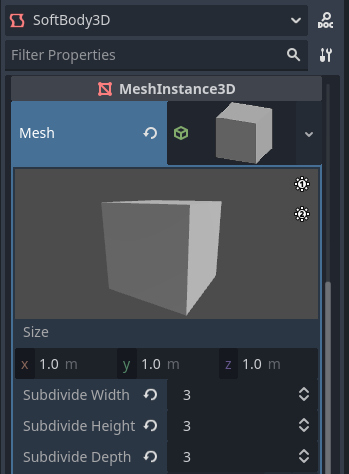
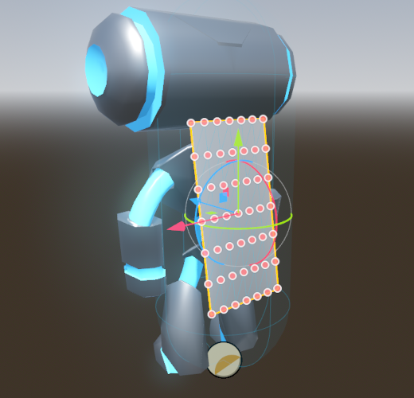
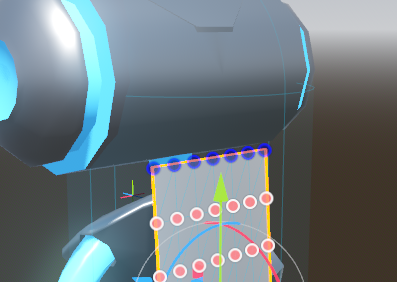
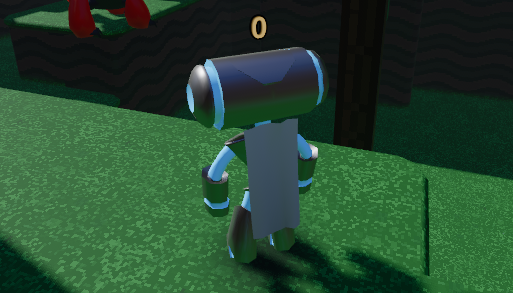

Sử dụng SoftBody3D
Soft body (hay động lực học vật mềm) mô phỏng chuyển động, sự thay đổi hình dạng và các thuộc tính vật lý khác của vật thể có thể biến dạng. Ví dụ, có thể dùng nó để mô phỏng vải hoặc tạo các nhân vật chân thực hơn.
Những lưu ý về engine vật lý
Hỗ trợ soft body nhìn chung ổn định hơn trong Jolt Physics so với GodotPhysics3D. Bạn có thể chuyển engine vật lý bằng cách thay đổi Physics > 3D > Physics Engine trong Project Settings. Các dự án tạo trong Godot 4.6 trở về sau dùng Jolt Physics theo mặc định, còn các dự án có sẵn sẽ phải chuyển đổi thủ công.
Ngoài ra, physics interpolation hiện không ảnh hưởng đến soft body. Nếu muốn mô phỏng soft body trông mượt hơn ở framerate cao, bạn sẽ phải tăng cài đặt dự án Physics > Common > Physics Ticks per Second, điều này sẽ tốn hiệu năng.
Thiết lập cơ bản
Node SoftBody3D được dùng cho mô phỏng soft body. Khác với các node physics body khác như RigidBody3D hay StaticBody3D, nó không có node con CollisionShape3D hay MeshInstance3D. Thay vào đó, collision shape được suy ra từ mesh gán cho node. Mesh này cũng được dùng trực tiếp để kết xuất, nghĩa là bạn không cần tạo node con nào để có một thiết lập hoạt động và hiển thị được.
Chúng ta sẽ tạo một khối lập phương đàn hồi để minh họa cách thiết lập soft body.
Tạo một scene mới với node gốc là Node3D. Sau đó, tạo một node SoftBody3D. Thêm một BoxMesh vào thuộc tính Mesh của node trong inspector và tăng mức chia nhỏ (subdivision) của mesh để mô phỏng.
Mức subdivision quyết định độ chính xác của biến dạng; giá trị càng cao cho phép biến dạng càng nhỏ và chi tiết, nhưng tốn hiệu năng hơn. Trong ví dụ này, chúng ta sẽ đặt nó là 3 trên mỗi trục:

Điều chỉnh thuộc tính BoxMesh trong inspector
Bây giờ, hãy đặt các tham số để có loại soft body bạn mong muốn. Cố giữ Simulation Precision trên 5; nếu không, soft body có thể bị sụp.

Điều chỉnh thuộc tính mô phỏng của SoftBody3D trong inspector
Ghi chú
Hãy cẩn thận với một số tham số, vì vài giá trị có thể dẫn đến kết quả kỳ lạ. Ví dụ, nếu shape không khép kín hoàn toàn và bạn đặt áp suất lớn hơn 0.0, soft body sẽ bay lung tung như túi nilon trước gió mạnh.
Chạy scene để xem mô phỏng. Đây là ví dụ về kết quả bạn sẽ thấy:
Mẹo
Để cải thiện kết quả mô phỏng, hãy tăng Simulation Precision. Điều này có thể cải thiện đáng kể nhưng tốn hiệu năng.
Ngoài ra, bạn có thể tăng cài đặt dự án Physics > Common > Physics Ticks per Second, điều này cũng ảnh hưởng đến chất lượng mô phỏng soft body.
Mô phỏng áo choàng
Hãy làm một chiếc áo choàng trong demo Platformer 3D.
Ghi chú
Bạn có thể tải demo Platformer 3D trên GitHub hoặc Asset Library.
Mở scene player/player.tscn, thêm một node SoftBody3D bên dưới node gốc, rồi gán một resource PlaneMesh cho thuộc tính Mesh của nó.
Mở các thuộc tính của PlaneMesh và đặt kích thước là (0.5, 1.0), rồi đặt Subdivide Width và Subdivide Depth thành 5. Điều chỉnh vị trí và góc xoay của node SoftBody3D sao cho mặt phẳng nằm sát lưng nhân vật. Bạn sẽ có kết quả tương tự như sau:

Chia nhỏ PlaneMesh và đặt nó lên lưng nhân vật
Mẹo
Subdivision tạo ra mesh có nhiều lưới tam giác hơn để mô phỏng tốt hơn. Tuy nhiên, mức subdivision cao hơn sẽ ảnh hưởng đến hiệu năng. Hãy tìm điểm cân bằng giữa hiệu năng và chất lượng. Điều này phụ thuộc vào số lượng mô phỏng soft body bạn dự kiến hoạt động cùng lúc, cũng như khoảng cách giữa camera và soft body.
Thêm một node BoneAttachment3D dưới node skeleton và chọn xương Neck để gắn áo choàng vào skeleton của nhân vật.
Ghi chú
Node BoneAttachment3D được dùng để gắn đối tượng vào một xương của armature. Đối tượng được gắn sẽ đi theo chuyển động của xương. Ví dụ, vũ khí nhân vật cầm có thể được gắn theo cách này.
Hiện tại không di chuyển node SoftBody3D vào dưới node BoneAttachment3D. Thay vào đó, chúng ta sẽ cấu hình các điểm ghim (pinned points) của nó để đi theo node BoneAttachment3D.

Cấu hình node BoneAttachment3D trong inspector
Để tạo điểm ghim, hãy chọn các đỉnh phía trên trong node SoftBody3D. Điểm ghim hiển thị màu xanh lam trong viewport của trình chỉnh sửa 3D:

Ghim các điểm của SoftBody3D trong inspector
Các khớp ghim nằm trong mục Attachments của SoftBody3D, bên dưới mục Collision mà bạn phải mở rộng trước. Chọn node BoneAttachment3D làm Spatial Attachment Path cho từng khớp ghim. Giờ các khớp ghim đã được gắn vào cổ.
Mẹo
Để gán thuộc tính nhanh hơn, bạn có thể kéo thả node BoneAttachment3D từ Scene dock vào ô thuộc tính Spatial Attachment Path.
Lưu ý rằng bạn có thể phải bỏ chọn rồi chọn lại node SoftBody3D để mục Attachments hiện ra.

Cấu hình các điểm ghim gắn vào node BoneAttachment3D trong inspector của SoftBody3D
Bước cuối cùng là tránh hiện tượng xuyên mesh bằng cách thêm CharacterBody3D Player (node gốc của scene) vào thuộc tính Parent Collision Ignore của SoftBody3D.

Thiết lập ngoại lệ va chạm trong inspector của SoftBody3D
Chạy scene và áo choàng sẽ được mô phỏng chính xác.

Kết quả cuối cùng khi chạy scene chính của dự án
Phần này đã bao quát các cài đặt cơ bản của mô phỏng soft body. Hãy thử nghiệm với các tham số để đạt được hiệu ứng bạn muốn khi làm game.
Ghi chú
Áo choàng sẽ không hiển thị khi nhìn từ một số góc do backface culling. Để khắc phục, bạn có thể tắt backface culling bằng cách gán một StandardMaterial3D mới, rồi đặt cull mode của nó thành Disabled. Điều này sẽ khiến material kết xuất cả hai mặt của mặt phẳng.
Sử dụng mesh được import
Tùy chọn Save to File trong hộp thoại Advanced Import Settings cho phép bạn lưu mesh thành một file resource riêng, sau đó có thể gắn vào các node SoftBody3D.
Bạn cũng có thể muốn tắt việc tạo LOD hoặc thay đổi tùy chọn tạo LOD khi import mesh để dùng với SoftBody3D. Cài đặt import mặc định sẽ tạo ra LOD gộp các mặt kề nhau gần như phẳng với nhau, ngay cả ở khoảng cách kết xuất rất gần. Điều này hoạt động tốt với mesh tĩnh, nhưng thường không mong muốn khi dùng với SoftBody3D nếu bạn muốn các mặt này có thể uốn cong và di chuyển tương đối với nhau, thay vì được kết xuất như một mặt phẳng duy nhất.
Xem Cấu hình import và Mức độ chi tiết của mesh (LOD) để biết thêm chi tiết.